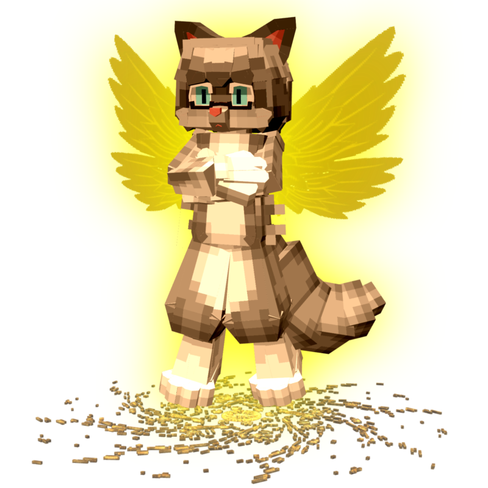
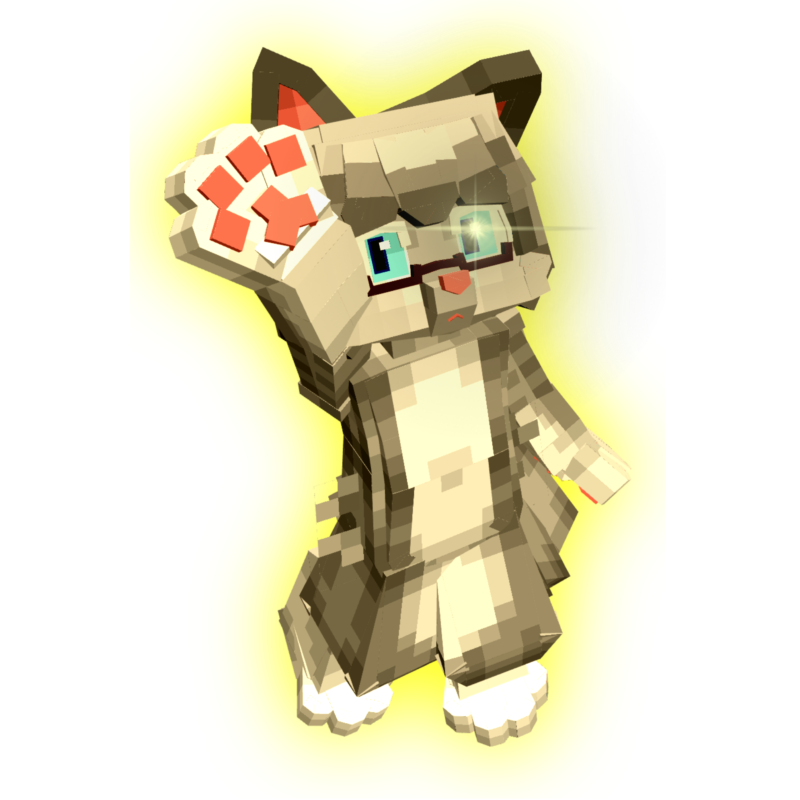
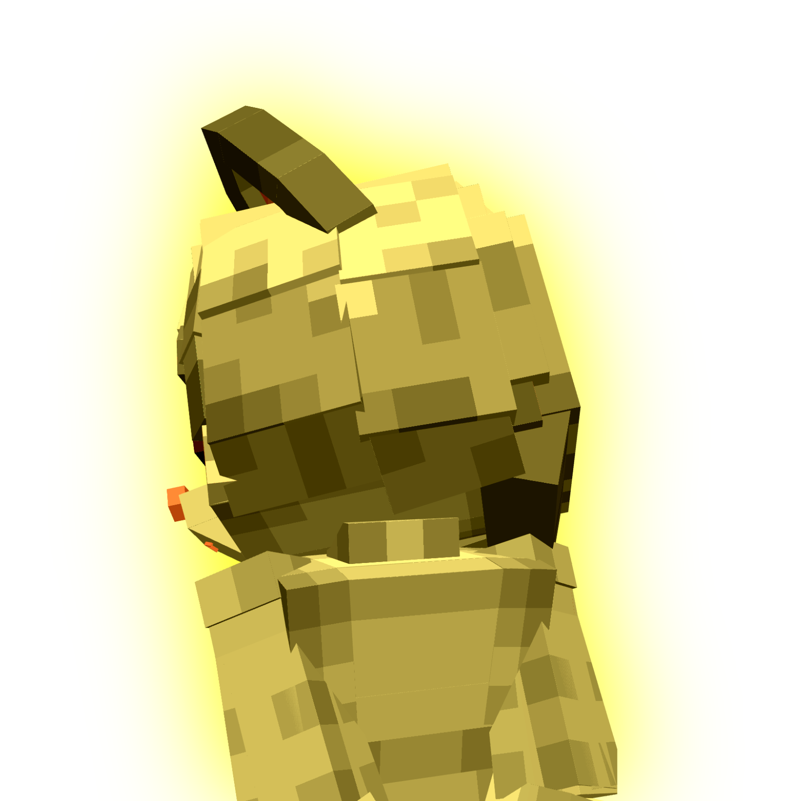
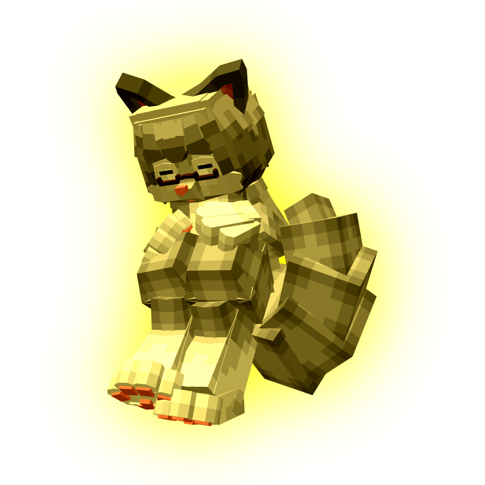
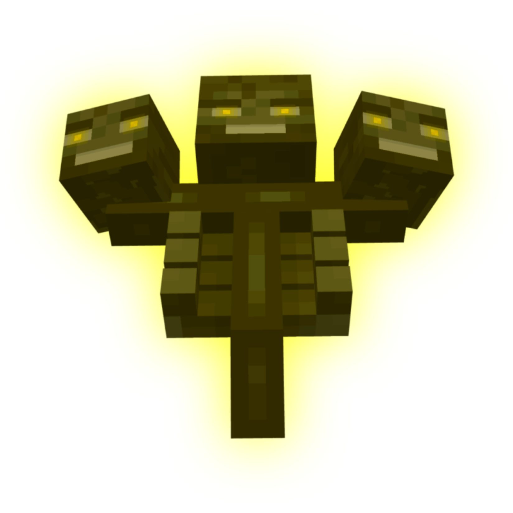

Addon
4.0XR
Yellow Calmness Cat -Very Easy-
攻撃手段が多く演出に特化したモブ。殺傷力・耐久力共にバランスがとれている。
対応バージョン: v26.1~
制作したアドオンの一覧です。

攻撃手段が多く演出に特化したモブ。殺傷力・耐久力共にバランスがとれている。
対応バージョン: v26.1~

スポーン時の演出と背景に特化した棒立ちモブ。GametestEXを使用しているため取り扱い注意。
対応バージョン: v26.1~

大幅に殺傷力が向上した棒立ちモブ。耐久力も高くディスペンサー使用を推奨。
対応バージョン: v26.1~

Alive偽装や時止めといった論外技術を利用したモブもどき。作るべきではなかった負の遺産。
対応バージョン: v26.1~

WitherzillaとYCCのコラボモブ。スポーンカウンターなどの特殊な技術を使用。
対応バージョン: v26.1~